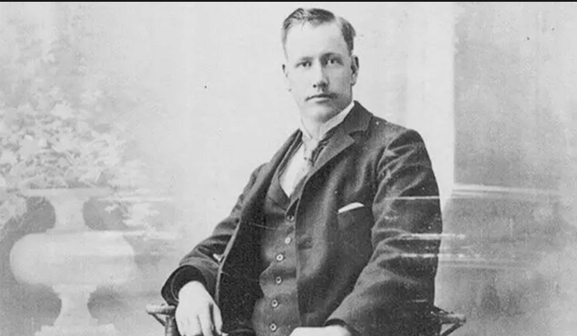
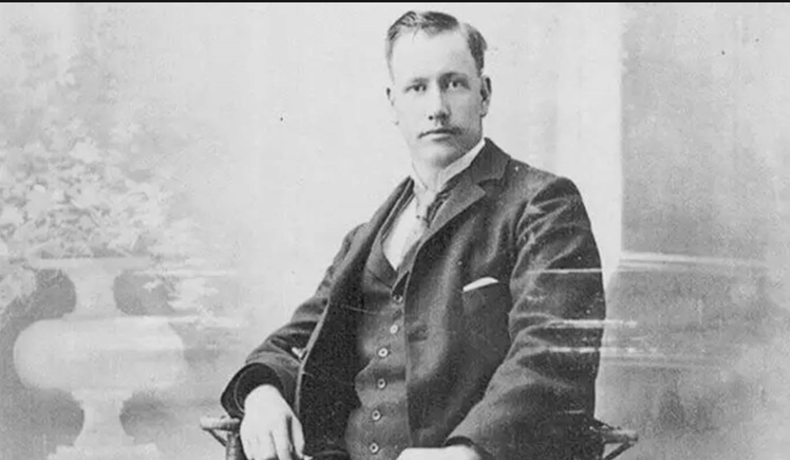
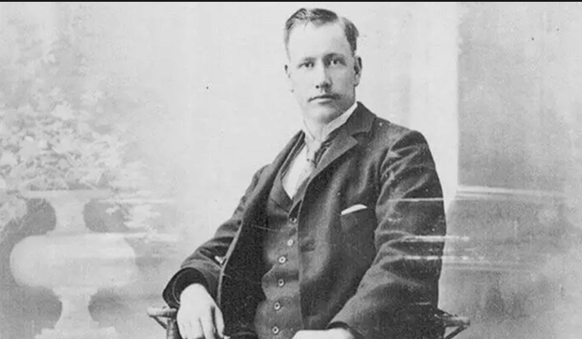

Bola voli diciptakan pada 1895 oleh William G. Morgan di YMCA, Amerika Serikat, awalnya bernama "Mintonette".
Permainan ini dirancang sebagai alternatif yang lebih ringan dari bola basket. Pada 1896, nama "volleyball" diperkenalkan oleh Alfred T. Halstead.
Olahraga ini berkembang pesat, dan pada 1947, FIVB (Federation Internationale de Volleyball) didirikan.
Bola voli resmi menjadi bagian Olimpiade pada 1964 di Tokyo. Kini, olahraga ini populer di seluruh dunia, termasuk variasi seperti voli pantai.
POST 2

William G. Morgan (1870–1942) adalah seorang instruktur pendidikan jasmani di YMCA (Young Men's Christian Association) di Holyoke, Massachusetts, Amerika Serikat.
Ia dikenal sebagai pencipta bola voli pada tahun 1895. Morgan menciptakan olahraga ini sebagai alternatif yang lebih ringan dari bola basket, sehingga dapat dimainkan oleh orang dari berbagai usia dan tingkat kebugaran.
Awalnya, ia menamakannya "Mintonette", sebelum akhirnya diubah menjadi "volleyball" pada tahun 1896.Morgan terinspirasi dari berbagai olahraga, seperti bola basket, tenis, dan baseball, untuk menciptakan aturan dasar bola voli.
Kontribusinya membuat bola voli berkembang menjadi salah satu olahraga paling populer di dunia.
POST 3
Berikut adalah tabel pemain:
no punggung
nama
posisi
7
nadia
4
12
iis
2
2
gita
1
8
salma
3
POST 4
Di video ini membahas teknik dasar bola voli Passing Bawah dan juga Passing atas.
Berikut adalah beberapa teknik dasar dalam permainan bola voli:
passing atas
Teknik mengoper bola dengan ujung jari tangan menggunakan gerakan dorongan ke atas.
Biasanya digunakan untuk mengatur serangan atau memberikan umpan kepada rekan satu tim.
passing bawah
Teknik mengoper bola dengan kedua lengan yang dirapatkan dan tangan saling menggenggam.
Teknik ini biasanya digunakan untuk menerima servis atau bola rendah dari lawan.
smash
Teknik memukul bola dengan keras dan tajam ke area lawan menggunakan satu tangan.
Smash dilakukan untuk mencetak poin dengan menekan pertahanan lawan.
blokc
Teknik bertahan dengan mengangkat kedua tangan ke atas di dekat net untuk menghalangi atau menghambat serangan smash dari lawan.
servich
Teknik memulai permainan dengan memukul bola dari luar garis belakang lapangan ke area lawan.
Servis dapat dilakukan dengan berbagai cara, seperti servis bawah, servis atas, atau jump serve.
POST 6
Anugerah Terindah adalah lagu yang menyuarakan curahan hati seseorang yang menemukan cinta sejatinya dan menerima segala kelebihan dan kekurangan pasangannya.

 
